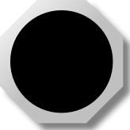
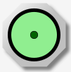
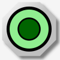
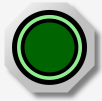
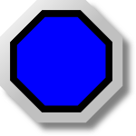

MBLogic
for an open world in automation
MBLogic
for an open world in automation
Pilot Lights
Pilot lights are output devices and are controlled via their SVG "id". Also see push buttons for illuminated push buttons.
Bi-Coloured Pilot Lights
Bi-coloured pilot lights may have their colours of the central object set to one of two defined colours, depending on the state of a boolean tag.
| Type | Name | Description | HMIBuilder Name | |
|---|---|---|---|---|
| Pilot light. | pl_octagonal | Octagonal pilot light. | Pilot Light | |
|  | Pilot light. | pl_round | Round pilot light. | Pilot Light |
| Pilot light. | pl_square | Square pilot light. | Pilot Light | |
| Pilot light with label. | pl_labelled_<colour> | Oblong pilot light with text label (text comes in various colours). | Labelled Pilot Light |
HMIBuilder Parameters
| Parameter | Type | Values | Description |
|---|---|---|---|
| Output Tag | Option menu | Address tags | The HMI server tag to read the current state from |
| Init Colour | Option menu | Colour | The colour to before use starting |
| Off Colour | Option menu | Colour | The colour to use when the output tag is 0 |
| On Colour | Option menu | Colour | The colour to use when the output tag is not 0 |
The available colours are: aqua, blue, cyan, grey, green, indigo, khaki, lime, maroon, navy, olive, orange, purple, red, silver, tan, teal, violet, white, yellow.
Note: When the HMI web page starts up, it will use the "init" colour until the first scan is able to set the correct colour. This means you will not see either the "on" or "off" colours until valid data is available.
Multi-Coloured Pilot Lights
Multi-coloured pilot lights may have their colours of the central object set to one of a list of colours, depending on the state of an integer value.
| Type | Name | Description | HMIBuilder Name | |
|---|---|---|---|---|
| Pilot light, multi-colour. | pl_multi_octagonal | Octagonal pilot light. | Pilot Light Multi-colour | |
| Pilot light, multi-colour. | pl_multi_round | Round pilot light. | Pilot Light Multi-colour | |
| Pilot light, multi-colour. | pl_multi_square | Square pilot light. | Pilot Light Multi-colour | |
| Pilot light with label, multi-colour. | pl_multi_labelled_<colour> | Oblong pilot light with text label (text comes in various colours). | Labelled Pilot Light Multi-colour |
HMIBuilder Parameters
| Parameter | Type | Values | Description |
|---|---|---|---|
| Output Tag | Option menu | Address tags | The HMI server tag to read the current state from |
| Init Colour | Option menu | Colour | The colour to before use starting |
Colour Codes
The following are the colour codes used for multi-colour pilot lights. For example, setting the output tag address to 4 will cause the pilot light to turn green.
Different colour combinations are possible by constructing a custom widget.
| Index | Colour | Index | Colour | |
|---|---|---|---|---|
| 0 | aqua | 10 | olive | |
| 1 | blue | 11 | orange | |
| 2 | cyan | 12 | purple | |
| 3 | grey | 13 | red | |
| 4 | green | 14 | silver | |
| 5 | indigo | 15 | tan | |
| 6 | khaki | 16 | teal | |
| 7 | lime | 17 | violet | |
| 8 | maroon | 18 | white | |
| 9 | navy | 19 | yellow |
Animated Pilot Lights
Animated pilot lights alternate between two colours, with one colour "growing" (increasing in diameter) from the centre outwards. This provides a "flashing" effect. Animated pilot lights are only available in certain colours and "flash" by alternating between two fixed colours. The flash rate is fixed at a period of 1 second.
  
SVG animations are a comparitively new feature in web browsers and may not work correctly in all browser versions even if that browser supports (non-animated) SVG. Test all your target browsers to see if they will work for you. SVG animations may place significant CPU load on the PC used to display them. Avoid using a large number of simultaneous animations and check the resulting CPU load on the target PC.
| Type | Name | Description | HMIBuilder Name | |
|---|---|---|---|---|
|  | Pilot light. | pl_glow_oct_<colour> | Animated octagonal pilot light. | Pilot Light Animated |

|
Pilot light. | pl_glow_round_<colour> | Animated round pilot light. | Pilot Light Animated |
| Pilot light. | pl_glow_square_<colour> | Animated square pilot light. | Pilot Light Animated |
Available Colours
| Nominal Colour | "Off" Colour | "Flash" Colour |
|---|---|---|
| white | darkgrey | white |
| darkblue | darkblue | lightblue |
| blue | blue | violet |
| green | darkgreen | lightgreen |
| grey | darkgrey | lightgrey |
| indigo | indigo | blue |
| orange | orange | yellow |
| red | red | brown |
HMIBuilder Parameters
| Parameter | Type | Values | Description |
|---|---|---|---|
| Output Tag | Option menu | Address tags | The HMI server tag to read the current state from |
Note: When the value of the output tag is 0, the pilot light will show the "off" colour. When the value is not zero, the pilot light will flash. There is no "init" colour to indicate that data is not available yet.
Also, be aware that continuous animation can take a lot of CPU power in the web browser. Check to make sure you are not overloading your HMI PC with excessive animations.
Special Purpose Pilot Lights
There are several special purpose pilot lights which indicate the status of either the HMI system itself or of alarms. The data for each of these is not derived from normal address tags, so there is no need to specify the address tag.
| Type | Name | Description | HMIBuilder Name | |
|---|---|---|---|---|
| Pilot light - alarm. | pl_alarmstat_<colour> | Oblong pilot light with text label (text comes in various colours). Used to indicate HMI alarm status. | Alarm Status Pilot Light | |
| HMI status pilot light. | pl_stat_<colour> | Oblong pilot light with text label (text comes in various colours). Used to indicate HMI communications errors. | Status Pilot Light | |
| HMI watchdog pilot light. | pl_watchdog_<colour> | Oblong pilot light with text label (text comes in various colours). Used to indicate HMI communications timeouts. | Watchdog Pilot Light |
Alarm Status Colours
The following colours are used for the alarm status pilot light. These are intended to mirror the colours used for the alarm table in the standard web page template. If the standard template is modified, the colours used in the widget should also be modified to match.
Only one colour at a time will be displayed. States listed closer to the bottom of the table will take priority over those listed above them.
| Status Colour | Description |
|---|---|
| white | No alarms are present. |
| green | Unacknowledged alarms are present, but are in the 'Ok' state. |
| orange | Acknowledged alarms are present which are still in the 'not Ok' state. |
| red | Unacknowledged alarms are present which are not in the 'Ok' state. |
HMIBuilder Parameters
| Parameter | Type | Values | Description |
|---|---|---|---|
| Init Colour | Option menu | Colour | The colour to before use starting |
| Ok Colour1 | Option menu | Colour | The colour to use when Ok |
| Error Colour1 | Option menu | Colour | The colour to use when an error is present |
1Note: Not present in alarm status pilot lights.